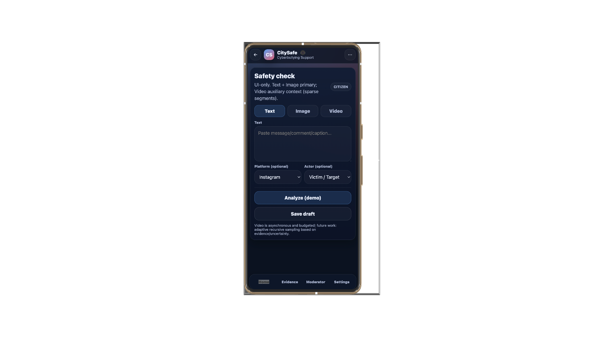
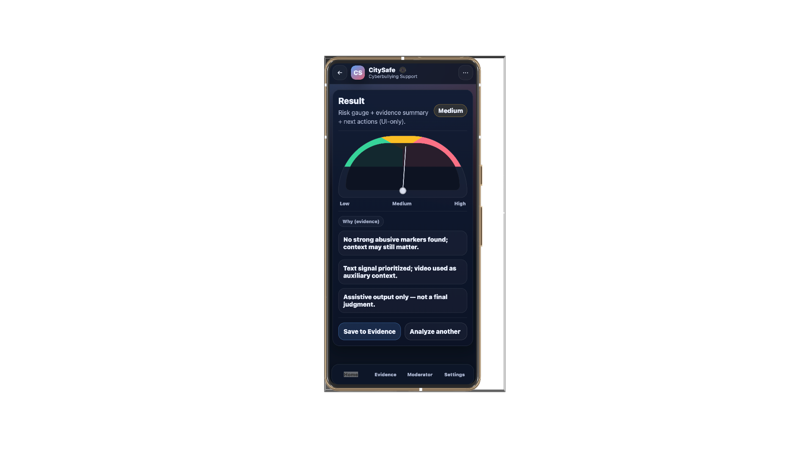
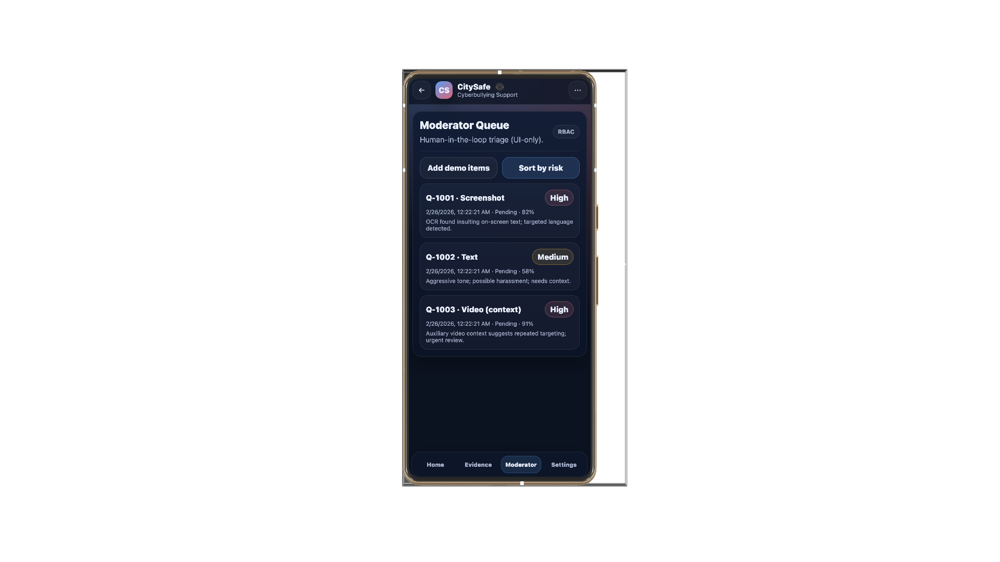
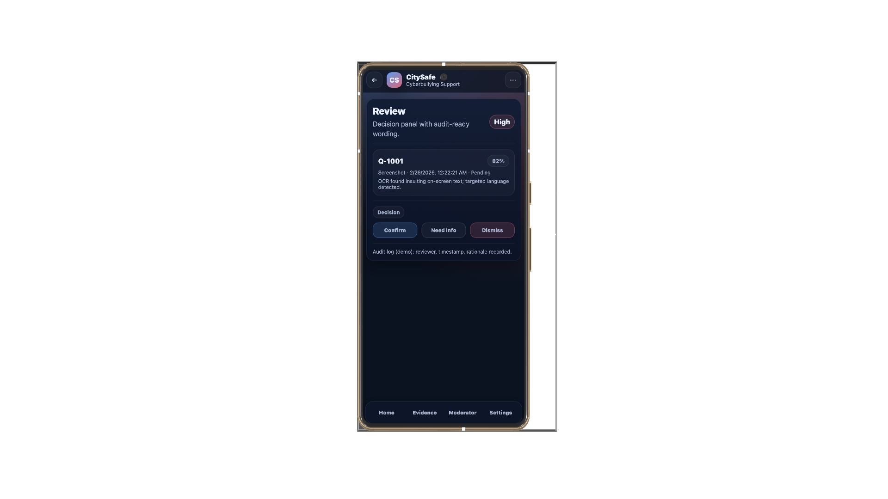

1. Safety Check
The first screen is a quick entry point. A user can paste a message, choose a platform, and start a basic check without dealing with a long form.
A closer look at the app flow, from user input to result reading, evidence saving, and moderator review.
See how CitySafe moves a case from initial input to final moderator review. Designed for real-world application, the mobile interface supports safety checks, evidence collection, and moderator-side follow-up in one clear flow.
CitySafe is a smart-city-oriented pilot for cyberbullying risk screening, multimodal evidence organization, and privacy-aware human review support — designed to assist users and moderators rather than automate enforcement decisions.
A short walkthrough of the mobile-side flow and the main screens in the prototype.
From a quick safety check to moderator-side review, these screens show the main CitySafe path in a simple order.

The first screen is a quick entry point. A user can paste a message, choose a platform, and start a basic check without dealing with a long form.

The result screen shows a simple risk gauge with short notes. It gives the user something readable on one page and leaves room to save the case for later follow-up.

Flagged cases can be collected in a queue so reviewers see the more urgent items first. This helps turn the project from a model demo into a clearer moderation workflow.

The review screen shows how a moderator might confirm, dismiss, or request more information. It also hints at record keeping and audit logging during follow-up.
The mobile interface is designed to carry a case from the first safety check to evidence saving and moderator review. It turns model output into a workflow that people can act on.